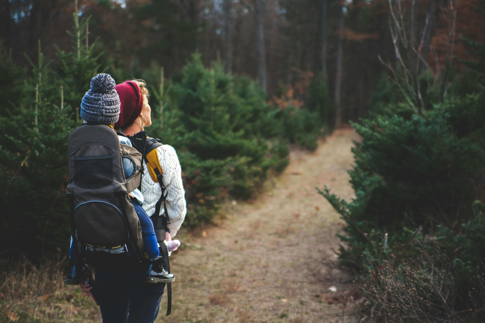

The Digital Detox That Changed Everything:
How One Family Found Balance Through Simple Nature Connection
Three years ago, the Martinez family was drowning in screens and constant stress. Today, their simple 15-minute daily nature routine has transformed not just their kids' behavior, but their entire family dynamic. From tantrum-prone toddlers to anxious teenagers, discover how micro-doses of outdoor time created lasting changes backed by breakthrough research on children's brain development.